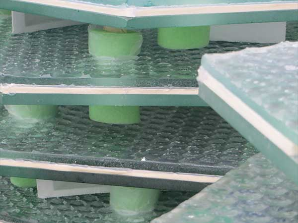

The next big event was the USDOT’s SBIR solicitation, looking for a new pavement system that could help pay for itself with the generation of renewable energy. We applied for the Phase I SBIR (Small Business Innovation Research) contract and received the $100,000 six-month award. Although not required, we decided that in addition to collecting scientific feasibility papers from university professors, we wanted to actually build a crude prototype. The prototype had LEDs, but did not contain solar cells, since it was an indoor project and was not designed to withstand the weather.
We were awarded a 2-year $750,000 Phase II SBIR contract by the USDOT in July of 2011. This funding allowed us to conduct more research and build the world’s first prototype solar parking lot. This was a complex task and extremely difficult to manage within the allowed budget. First, we had to create a brand new prototype: the SR2. We made many changes: the panels became smaller (about 4 square feet), changed shape to become hexagons, glass was used for the top and bottom of each panel and this time solar cells were included.
After installing the Phase II prototype parking lot, we realized that some improvements could be made to the SR2 panel design. We knew we wanted to increase the solar cell coverage, since SR2 had only 69-percent surface coverage. We decided that if we used edge connectors, we could eliminate the mounting holes which were taking up needed real estate on the panels. This change increased our solar cell coverage by 25-percent. The edge connector also makes the panels simpler to install. Solar Roadways® has purchased machinery to take on more and more of the manufacturing in house.